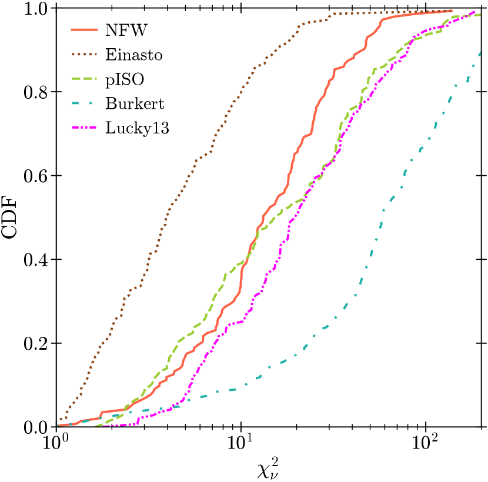
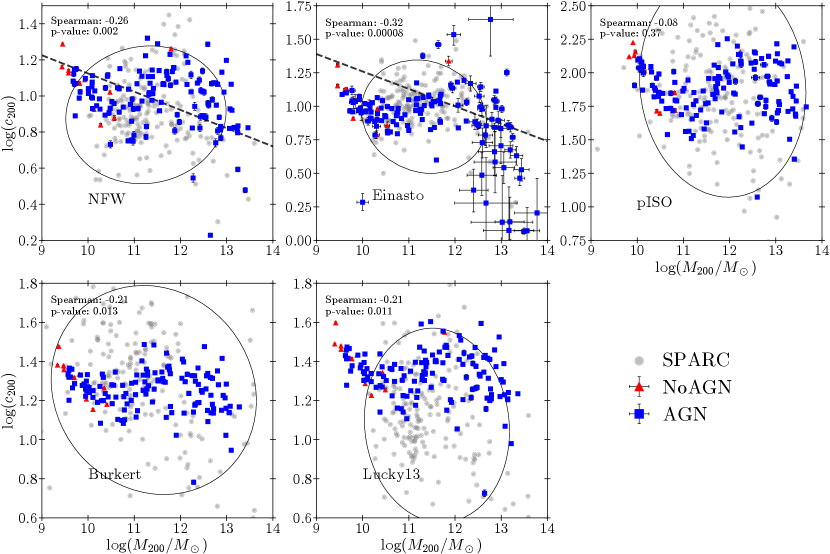
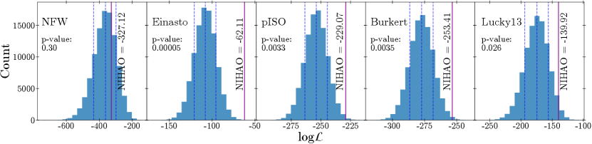
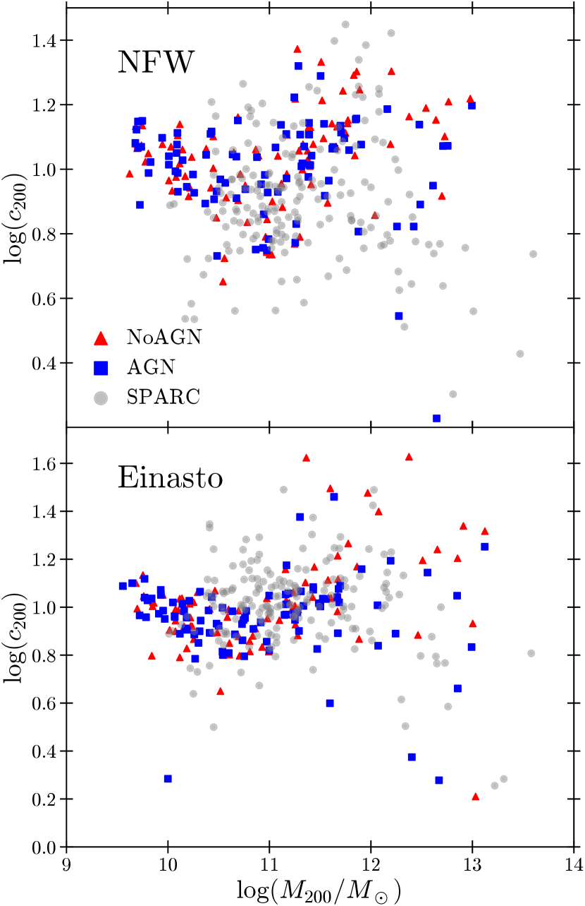
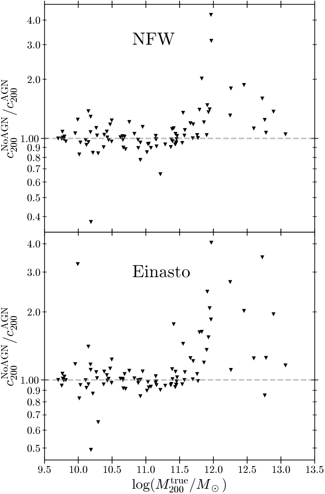
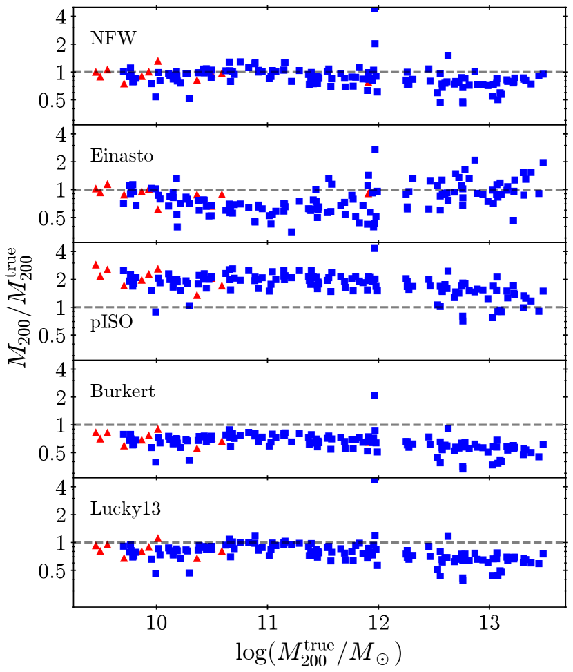
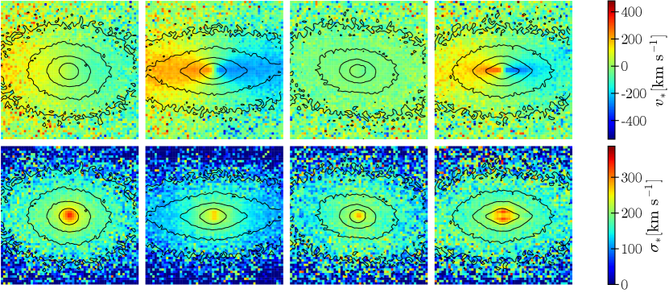
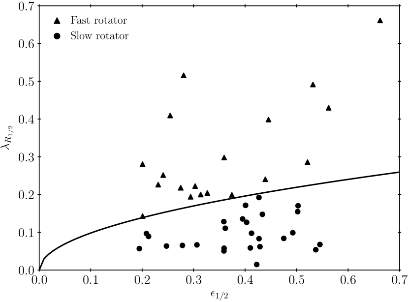
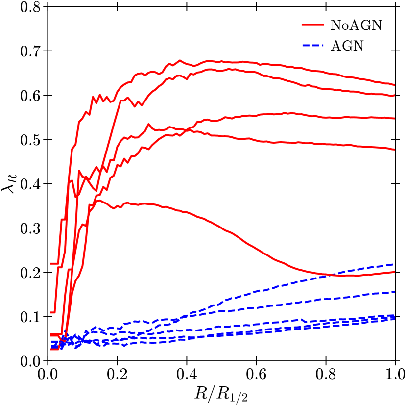
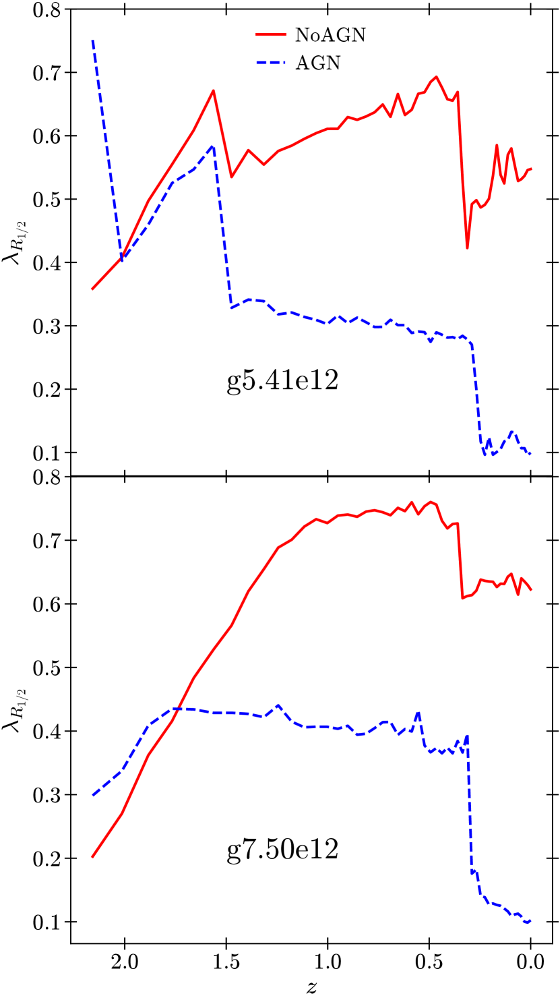

NIHAO XXVIII: الآثار الجانبية لـ AGN في تركيز المادة المظلمة والحركيات النجمية
الملخص
على الرغم من أن التغذية الراجعة للنوى المجرية النشطة (AGN) مطلوبة في عمليات محاكاة المجرات لتنظيم تكوين النجوم، إلا أنه يمكن توقع المزيد من التأثيرات النهائية على توزيع المادة المظلمة للهالة والحركيات النجمية للمجرة المركزية. نحن نجمع بين محاكاة المجرات مع أو بدون فيزياء AGN من التحقيق العددي لمائة جسم فيزيائي فلكي (NIHAO) للتحقيق في تأثير AGN على منحنى المادة المظلمة والدوران النجمي المركزي للمجرات المضيفة. على وجه التحديد، قمنا بدراسة كيفية تأثر العلاقة بين كتلة التركيز والهالة () ومعلمة الدوران النجمي () بالتغذية الراجعة لـ AGN. نجد أن فيزياء AGN ضرورية لتقليل الكثافة المركزية للمحاكاة المجرات الضخمة () وجعل تركيزها يتوافق مع النتائج من عينة Spitzer القياس الضوئي & منحنيات الدوران الدقيقة (SPARC). وبالمثل، فإن التغذية الراجعة لـ AGN لها دور رئيسي في إعادة إنتاج الانقسام بين الدوارات البطيئة والسريعة كما لاحظ استطلاع ATLAS. بدون قمع تشكل النجوم بسبب التغذية الراجعة لـ AGN، يتجاوز عدد الدوارات السريعة قيود المراقبة بقوة. تظهر دراستنا أن هناك العديد من الآثار الجانبية التي تدعم أهمية التغذية الراجعة لـ AGN في تكوين المجرات، ويمكن الاستفادة من هذه التأثيرات تقييد تنفيذها في المحاكاة العددية.
keywords:
النجوم الزائفة: ثقوب سوداء فائقة الكتلة، المجرات: التكوّن، المجرات: التطور، الطرائق: عددية، الطرائق: إحصائية1 مقدمة
في السنوات الأخيرة، دعمت الملاحظات الفلكية بشكل متزايد فكرة أن عددًا كبيرًا من المجرات الضخمة - إن لم يكن كلها - تحتوي على ثقب أسود فائق الكتلة (BH) في مركزها، مع كتل تتراوح من إلى (انظر، للمراجعة Cattaneo et al., 2009; Harrison, 2017, والمراجع الواردة فيه). ومن اللافت للنظر أن ملاحظات ودراسات BHs فائقة الكتلة تسلط الضوء على الارتباطات المدهشة بين كتلة BHs المركزية والمجرات المضيفة لها (مثلاً Kormendy & Ho, 2013). إن وجود مثل هذه الارتباطات ليس واضحًا مثل BHs وتختلف المجرات بعدة مراتب من حيث الحجم في مقاييس الحجم المادي، مما يشير إلى أن تطور العنصرين قد يكون مرتبطًا بشكل وثيق بسبب التأثير الكبير والمتبادل (ولكن انظر أيضاً Jahnke & Macciò, 2011, لتفسير آخر محتمل).
يؤدي التراكم على BH إلى ظهور ظواهر متعددة يمكن ملاحظتها، بما في ذلك الإشعاع الكهرومغناطيسي، والنفاثات النسبية، والتدفقات الخارجية غير النسبية الأقل توازيًا (Krolik, 1999). من خلال إصدار كميات كبيرة من الطاقة والزخم، يمكن أن يكون لـ نواة المجرة النشطة (AGN) تأثير كبير على تكوين النجوم في المجرة: يمكن أن تقترن الطاقة والزخم المنطلقان بالغاز داخل المجرة وما حولها من خلال آليات فيزيائية مختلفة. على وجه التحديد، يمكن لـ AGNs تسخين الغاز المحيط بها، وبالتالي توفير شكل من أشكال التغذية الراجعة الحرارية، في حين يتم توفير التغذية الراجعة الحركية عن طريق الرياح الدافعة التي تقذف الغاز (مثلاً King, 2003).
في الواقع، تحرير الطاقة في البيئة المجاورة عن طريق AGNs - يشار إليها عادةً باسم AGN التغذية الراجعة - ضروري في معظم عمليات محاكاة تكوين المجرات لتقليل تكوين النجوم واستعادة العديد من الملاحظات الرئيسية للمجرات الضخمة (مثلاً Valageas & Silk, 1999; Croton et al., 2006; Somerville et al., 2008; Vogelsberger et al., 2014; Crain et al., 2015; Costa et al., 2018; Blank et al., 2019; Zinger et al., 2020). تعمل الطاقة التي يتم نقلها من AGN إلى بيئتها على تسخين الغاز المحيط بشكل فعال وتقاوم عملية التبريد المطلوبة لتكوين نجوم جديدة. ونتيجة لذلك، فإن التوزيع العمري الإجمالي للنجوم في المجرات المضيفة AGN ينحرف نحو مجموعة أكبر سنًا وبالتالي حمراء (مثلاً Thomas et al., 2005).
بعض الأدلة على إخماد تكوين النجوم الناجم عن التغذية الراجعة لـ AGN مستمدة من ملاحظات عدد صغير من النجوم المضيئة البعيدة AGN عند الانزياحات الحمراء ، حيث وجد أن التدفقات المتأينة غير مرتبطة مكانيًا بموقع مناطق الانبعاث الضيقة H، والتي تشكل واحدة من متتبعات تكوين النجوم (Cano-Díaz et al., 2012; Carniani et al., 2016). كما ربطت الدراسات الإحصائية التي أجريت على عينات كبيرة من المجرات المضيفة AGN بشكل منهجي بين التغذية الراجعة ومعدل تكوين النجوم (SFR)، حيث وجد باستمرار أن مصادر الراديو العالية لديها انخفاض SFR (Hardcastle et al., 2013; Ellison et al., 2016; Leslie et al., 2016; Ellison et al., 2016; Comerford et al., 2020). تم أيضًا ربط التغذية الراجعة لـ AGN بإخماد عملية تكوين النجوم في AGNs (Page et al., 2012) الأكثر سطوعًا. تجدر الإشارة إلى أن بعض التوتر لا يزال قائمًا، حيث تقدم بعض الدراسات الرصدية ادعاءات معاكسة وتكشف عن أدلة على تعزيز تكوين النجوم بسبب نشاط AGN (Elbaz et al., 2009; Lutz et al., 2010; Santini et al., 2012; Juneau et al., 2013; Bernhard et al., 2016; Dahmer-Hahn et al., 2022) أو القمع والتعزيز الذي يعمل بشكل متزامن في نفس المجرة (Zinn et al., 2013; Karouzos et al., 2014; Cresci et al., 2015; Shin et al., 2019).
في حين أن التغذية الراجعة لـ AGN مطلوبة بشكل أساسي وتستخدم كوسيلة لوقف تكوين النجوم في عمليات محاكاة تكوين المجرات وتطورها، كما أن لها بعض التأثيرات الجانبية على ديناميكيات وتوزيع المكونات غير القابلة للتصادم في المجرة: النجوم والمادة المظلمة (DM). Martizzi et al. (2012) قارنت عمليات المحاكاة العددية لمجموعات المجرات مع أو بدون تغذية راجعة AGN وحصلت على نوى ذات كثافة مسطحة في DM ومنحنيات نجمية عندما تم تضمين تغذية راجعة AGN، على عكس تنبؤات عمليات المحاكاة DM فقط حيث يكون ما يسمى النتوء المركزي المتوقع (مثلاً Dubinski & Carlberg, 1991; Navarro et al., 1997). في الآونة الأخيرة، أظهر Macciò et al. (2020b) أيضًا أن تدفقات الغاز الناتجة عن AGN يمكن أن تعمل ضد الانكماش الطبيعي DM الناجم عن وجود مكون نجمي كبير في مركز الهالات الضخمة (Blumenthal et al., 1986; Gnedin et al., 2004; Abadi et al., 2010; Schaller et al., 2015). هناك طريقة شائعة لمقارنة توزيع DM في الكائنات المحاكاة والحقيقية عبر علاقة التركيز والكتلة () (مثلاً Bullock et al., 2000; Macciò et al., 2007)، نظرًا لأن يمكن حساب معامل التركيز، ، بسهولة من منحنيات دوران المجرة.
هناك تأثير آخر لـ AGNs على خصائص المجرة، مكمل للتأثير على تكوين النجوم، وهو انعكاسه على الخصائص الحركية للجسم النجمي. تم العثور على المجرات الإهليلجية أكثر تعقيدًا الحركية مما كان يعتقد في البداية. استخدم Emsellem et al. (2007) 2D حركيات النجوم للمجرات الإهليلجية والعدسية باستخدام مطياف المجال المتكامل SAURON (Bacon et al., 2001) ووجد دورانًا متماسكًا كبيرًا في الجزء الداخلي من هذه المجرات. ومن ثم اقترحوا نظام تصنيف جديد للمجرات من النوع المبكر: الدوارات البطيئة (SRs) والدوارات السريعة (FRs)، وفقًا لمقدار الدوران واسع النطاق الموجود. تم تأكيد نتائجهم وتوسيع نطاقها من خلال مسح ATLAS (Cappellari et al., 2011) الذي حلل 260 المجرات من النوع المبكر وصنفها. 86 في المائة منها كـ FRs بناءً على قياسات معامل الدوران المصحح للإهليلجية (Emsellem et al., 2011). مؤخرًا، استخدم Frigo et al. (2019) 20 المحاكاة الكونية للمجرات الضخمة لدراسة تأثيرات AGN على دوران المجرة، ووجد ذلك بالفعل تعمل التغذية الراجعة لـ AGN على تعزيز إنتاج SRs بسبب انخفاض تكوين النجوم في الموقع في المجرات.
في هذه المخطوطة، نعتزم دراسة التأثيرات الجانبية المذكورة أعلاه لـ AGNs باستخدام المجرات المحاكاة من التحقيق العددي لمائة كائن فيزيائي فلكي (NIHAO؛ Wang et al., 2015). يحتوي على عينة إحصائية كبيرة () من عمليات المحاكاة الكونية المقربة عالية الدقة، والتي تتراوح من المجرات القزمة إلى المجرات الإهليلجية. تتضمن عمليات المحاكاة NIHAO تبريد المعادن، وتكوين النجوم، والإثراء الكيميائي، والتغذية الراجعة من النجوم الضخمة، والمستعرات الأعظم، وAGNs. يتم حل كل مجرة باستخدام من الجسيمات، مما يؤدي إلى تحليل منحنيات الكتلة وصولاً إلى 1 في المائة من نصف القطر الفيريالي.
نجحت عمليات المحاكاة NIHAO في استعادة خصائص المجرات المختلفة مثل علاقة الكتلة النجمية إلى الهالة (SHMR) (Wang et al., 2015)، وكتلة غاز القرص وعلاقة حجم القرص (Macciò et al., 2016)، وعلاقة تولي-فيشر (Dutton et al., 2017)، وتنوع منحنيات دوران المجرة القزمة (Santos-Santos et al., 2018)، ووظيفة كتلة القمر الصناعي لمجرة درب التبانة و تم استرداد M31 جيدًا من خلال عمليات المحاكاة NIHAO (Buck et al., 2019)، بالإضافة إلى التسلسل الرئيسي لتكوين النجوم للمجرات المكونة للنجوم (Blank et al., 2021). وهذا يجعل مجموعة NIHAO الأداة المثالية لاختبار علاقة ومقارنتها بالملاحظات، بالإضافة إلى التحقق من تأثير التغذية الراجعة لـ AGN على وحركيات المجرات النجمية.
في الجزء الأول من هذا البحث، قمنا بدراسة تأثير AGN على تركيز DM في المجرات المحاكاة من NIHAO. نحن نحسب العلاقة للمجرات 143 NIHAO ونقارنها مع العلاقة المستنتجة من منحنيات دوران 175 المجرات من النوع المتأخر من Spitzer القياس الضوئي & منحنيات الدوران الدقيقة (SPARC؛ Li et al., 2020, يشار إليها فيما يلي بـ L20). قمنا باختبار خمسة من المنحنيات السبعة المستخدمة في L20 لكتل المجرات التي تغطي نطاقًا مدته خمسة عقود واستخدمنا كتل الهالة التي تم الحصول عليها من سلسلة ماركوف مونت كارلو (MCMC) المناسبة لحساب علاقة للعينة NIHAO.
وفي الجزء الثاني من هذه الورقة، نقوم بإجراء تحليل مماثل كما في Frigo et al. (2019). بدءًا من قاعدة البيانات NIHAO، نختار مجموعة فرعية من 40 المجرات الإهليلجية الضخمة ونستكشف مدى وفرة SRs وFRs. نؤكد أن خصائص هذا التوزيع تتفق مع الملاحظات الواردة من ATLAS (Cappellari et al., 2011). علاوة على ذلك، فإننا نتتبع الخصائص الحركية النجمية لمجموعة فرعية من خمس مجرات مع أو بدون فيزياء AGN، مما يسمح لنا باستنتاج تأثير التغذية الراجعة لـ AGN على تطور حركيات المكون النجمي.
يتم تنظيم هذه الورقة على النحو التالي: في القسم 2، نقوم أولاً بمراجعة الخلفية النظرية المستخدمة في هذا العمل قبل وصف مجموعة المحاكاة NIHAO بالإضافة إلى عينة SPARC التي نقارن بها عمليات المحاكاة لدينا. وننهي هذا القسم بالتعريف بطرق استخلاص الكميات اللازمة من عمليات المحاكاة وكيفية إجراء التحليل على الأجزاء المظلمة والنجمية. يتم بعد ذلك عرض نتائجنا في القسم 3، بينما القسم 4 مخصص لتلخيص ومناقشة النتائج التي توصلنا إليها.
2 الطرائق
هذا القسم مخصص للطرق التي استخدمناها لإجراء تحليلنا. نبدأ بتقديم بعض الخلفية النظرية التي تحفز حساباتنا قبل تقديم البيانات المستخدمة في هذا العمل. نواصل بعد ذلك شرح كيفية استخراج نصف القطر الفيريالي الجوهري من عمليات المحاكاة، بالإضافة إلى الكتلة الفيريالية الجوهرية الناتجة. علاوة على ذلك، قمنا بتفصيل الإجراء MCMC المستخدم لملاءمة نماذج الكثافة DM المختلفة مع البيانات ووصف كيفية حساب نصف القطر الفيريالي والكتلة الفيريالية "المرصودة"، بالإضافة إلى الأخطاء الخاصة بكل منهما. ثم نحدد الطريقة الإحصائية التي نختارها للمقارنة مع الملاحظات من SPARC قبل أن نشرح أخيرًا كيف نستخرج معلمة الدوران والإهليلجية للمجموعة الفرعية من المجرات من النوع المبكر من كتالوج NIHAO. يتم استخراج جميع الكميات ذات الصلة في هذا القسم من عمليات المحاكاة باستخدام أداة ما بعد المعالجة PYNBODY (Pontzen et al., 2013).
2.1 الخلفية النظرية
في هذا القسم الفرعي، نراجع بإيجاز المعادلات الأكثر شيوعًا المستخدمة في الأدبيات لتمثيل الملامح الشعاعية DM للهياكل المنهارة بالإضافة إلى التعريف النظري لتركيز DM. نقوم أيضًا بمراجعة تعريف الخصائص الديناميكية ذات الصلة بالتحليل الديناميكي والمورفولوجي للمكون النجمي في هذا العمل: والإهليلجية.
2.1.1 منحنيات المادة المظلمة
بعد L20، نستخدم مجموعة من خمسة أشكال وظيفية مختلفة لتناسب منحنيات الكثافة DM المستخرجة من عمليات المحاكاة NIHAO، وهي: نافارو-فرينك-أبيض (Navarro et al., 1996, يشار إليه فيما يلي بـ NFW)، Einasto (Einasto, 1965)، متساوي الحرارة الزائف (pISO)، Burkert (Burkert, 1995) وLucky13 (Li et al., 2020). لكل من هذه المنحنيات، نحدد معلمة التركيز كنسبة بين نصف القطر الفيريالي للهالة (محسوبة بالكثافة 200 أضعاف الكثافة الحرجة للكون) ونصف قطر المقياس () الذي يصف الملف التحليلي المقابل. تمت دراسة العلاقة على نطاق واسع من أجل عمليات محاكاة الجسم (مثلاً Navarro et al., 1997; Bullock et al., 2001; Macciò et al., 2007; Neto et al., 2007; Prada et al., 2012; Dutton & Macciò, 2014)، وتم توفير العديد من الصيغ المناسبة. لكي نكون متسقين مع L20، سنستخدم هنا التنبؤات التي اقترحها Macciò et al. (2008a).
NFW
كان ملف التعريف NFW أحد المحاولات الأولى للحصول على وصف عالمي لمنحنيات كثافة الهالة DM من عمليات محاكاة -الجسم (الجاذبية فقط). يقرأ منحنى الكثافة هذا:
| (1) |
وكتلتها المغلقة:
| (2) |
حيث نستخدم المعلمة بدون أبعاد . يمثل و نصف القطر حيث يتغير المنحدر اللوغاريتمي من -1 إلى -3، والكثافة المميزة للهالة عند ، على التوالي. لاحظ أن ملف التعريف NFW له ميل داخلي قدره ومنحدر خارجي قدره .
Einasto
اقترح Navarro et al. (2004) نسخة منقحة من منحنيات NFW الأصلية، استنادًا إلى نموذج Einasto (Einasto, 1965). يقدم ملف التعريف هذا معلمة شكل إضافية () تؤدي إلى منحنى متعدد الاستخدامات يمكنه التكيف مع أشكال مختلفة من الكثافات المركزية:
| (3) |
ويتم إعطاء الكتلة المغلقة بواسطة
| (4) |
مع يمثل وظيفة جاما غير المكتملة.
pISO وBurkert
أثبت نموذج pISO أنه يعيد إنتاج منحنيات دوران المجرات القزمة (Adams et al., 2014; Oh et al., 2015) بدقة. يفترض هذا النموذج نواة ذات كثافة ثابتة يبلغ نصف قطرها والكثافة ويتم التعبير عنها على النحو التالي
| (5) |
وكتلتها المغلقة هي
| (6) |
أحد التحذيرات المتعلقة بـ pISO هو أن الكتلة المحصورة تتباعد بسرعة عند نصف قطر كبير. يقترح Burkert (1995) منحنى يتباعد بشكل أبطأ من pISO
| (7) |
مع الكتلة المغلقة
| (8) |
Lucky13
أخيرًا، يقترح L20 نموذجًا جديدًا يعتمد على النماذج (، ، ) (Hernquist, 1990; Zhao, 1996)، حيث تم ضبط على 1، و إلى 3، و إلى 0. Lucky13 وبالتالي يستنسخ نواة محدودة بالقرب من المركز ومنحدر NFW عند نصف قطر كبير. يتم تقديم المنحنى بواسطة
| (9) |
والكتلة المغلقة المقابلة
| (10) |
2.2 البيانات
يتم تقسيم عينة NIHAO من المجرات 143 المستخدمة إلى مجموعات فرعية وفقًا لما إذا كانت فيزياء AGN مدرجة في المحاكاة أم لا. يُشار إلى المجرات التي لا تحتوي على AGN على أنها NoAGN وتشكل 11 مجرات، بينما تشكل عمليات المحاكاة التي تتضمن BH النمو والتراكم والتغذية الراجعة عناصر 41 في العينة وتسمى AGN. بالإضافة إلى ذلك، تم تشغيل المجرات 91 مع BH وبدونه، وبالتالي فهي تقدم عينة مناسبة لقياس تأثير AGN على توزيع DM والحركيات النجمية للمجرات وهالة مضيفها. في القسمين الفرعيين التاليين، نقدم مجموعة المحاكاة NIHAO بالإضافة إلى مصادر بيانات الرصد المستخدمة للمقارنة مع عمليات المحاكاة.
2.2.1 NIHAO
كان مشروع NIHAO يهدف في البداية إلى إنتاج عينة من مجرات عالية الدقة تغطي ثلاثة أوامر من حيث الحجم في كتلة الهالة ()، وذلك باستخدام عمليات المحاكاة الهيدروديناميكية الكونية المقربة لدراسة تكوين وتطور المجرات في إطار كوني كامل (Wang et al., 2015). يستخدم هذا الجناح الكود GASOLINE2 (Wadsley et al., 2017)، وتحتوي كل هالة على تقريبًا من الجسيمات داخل نصف القطر الفيريالي، . الإطار الكوني المعتمد هو علم كونيات مسطح CDM مع معلمات من Planck Collaboration et al. (2014). المعلمة هابل والمادة والطاقة المظلمة والإشعاع وكثافة الباريون هي . تطبيع طيف القدرة والانحدار هما و على التوالي. يتم تحديد الهالات في عمليات المحاكاة NIHAO باستخدام Amiga Halo Finder (AHF; Gill et al., 2004; Knollmann & Knebe, 2009).
يتم إنتاج الشروط الأولية مع تعديل الكود GRAFIC2 الكود (Bertschinger, 2001). يمكن العثور على تفاصيل حول التعديلات في Penzo et al. (2014). يتم ضبط مستوى التحسين بهذه الطريقة للحفاظ على النسبة بين DM التخفيف و إلى تقريبًا. تعمل هذه الدقة النسبية الثابتة على حل منحنى الكتلة DM وصولاً إلى 1 في المائة من .
يتبع تكوين النجوم قانون كينيكوت-شميت (Schmidt, 1959; Kennicutt, 1998)، حيث تتحول جزيئات الغاز التي تتجاوز عتبة درجة حرارة وكثافة معينة إلى جزيئات نجمية. العتبات المعنية هي K لدرجة الحرارة و سم-3 للكثافة.
تم تضمين أنواع مختلفة من تغذية راجعة الطاقة في NIHAO. يُسمح للغاز بالتبريد من خلال التغذية الراجعة السلبية من تبريد كومبتون ويتم تنفيذ التأين الضوئي من الخلفية فوق البنفسجية الموحدة وفقًا لـ Haardt & Madau (2012). تخضع التغذية الراجعة النجمية لظاهرتين مختلفتين: توفر النجوم الضخمة تغذية راجعة مؤينة قبل أن تتحول إلى مستعرات أعظم، ويشار إليها باسم "التغذية الراجعة النجمية المبكرة" (Stinson et al., 2013)، في حين يتم حقن طاقة تغذية راجعة المستعر الأعظم من خلال صدمات موجة الانفجار (Stinson et al., 2006).
في الآونة الأخيرة، تم دمج BH البذرة والتراكم والتغذية الراجعة في مجموعة NIHAO لدراسة المجرات الإهليلجية الأكثر ضخامة، والتي يُعتقد أن مركزها AGNs يلعب دورًا حاسمًا في إخماد تكوين النجوم المرصود في المجرات الإهليلجية (انظر، مثلاً McNamara & Nulsen, 2007). فيما يلي، نقدم ملخصًا لكيفية تطور AGN وإعادة الطاقة إلى النظام في NIHAO؛ يمكن العثور على وصف كامل في Blank et al. (2019).
إذا تجاوزت الهالة كتلة عتبة قدرها ، فسيتم تحويل جسيم بذري BH ذو كتلة أولية من جسيم الغاز ذي إمكانات الجاذبية الأقل. BH تم تصميم التراكم والتغذية الراجعة كما تم تقديمها بواسطة Springel et al. (2005). على وجه التحديد، يستخدم NIHAO نموذج التراكم القياسي Bondi (Bondi, 1952) مع تعيين معلمة التعزيز على 70. يتم تحديد التراكم بمعدل Eddington، أي في كل خطوة زمنية ، يتم حساب معدل التراكم Bondi () ومعدل التراكم Eddington () ويتم حساب معدل التراكم BH كـ .
خلال كل خطوة زمنية، يقوم BH بتجميع الكتلة من جسيم الغاز الأكثر ارتباطًا بالجاذبية إليه. بمجرد وصول جسيم غاز إلى كتلة أقل من 20 في المائة من كتلته الأولية، تتم إزالة الجسيم، ويتم توزيع كتلته وزخمه بين جزيئات الغاز المجاورة. لا يوجد حد أقصى للمسافة التي يجب أن يكون عندها جسيم الغاز حتى يتراكم؛ ولكن بما أنه الجسيم الأكثر ارتباطًا، فهو عادة أيضًا الأقرب إلى BH. يتم حساب اللمعان BH () من معدل التراكم بافتراض كفاءة إشعاعية تبلغ 10 في المائة (Shakura & Sunyaev, 1973)، ويُفترض بعد ذلك أن يكون جزء من خمسة في المائة متاحًا كطاقة حرارية للبيئة المحيطة، والتي يتم بعد ذلك توزيعها على أقرب 50 جزيئات الغاز.
2.2.2 SPARC
SPARC هي قاعدة بيانات رصدية تتألف من 175 المجرات القريبة من النوع المتأخر (S0 إلى Irr) مع قياس ضوئي لسطح الأشعة تحت الحمراء القريبة عند 3.6 m ومنحنيات دوران ممتدة HI (Lelli et al., 2016). يقدم النطاق الواسع في اللمعان وسطوع السطح وسرعة الدوران عينة جيدة من المجرات القرصية في الكون القريب، وبالتالي فهو مناسب لدراسة مقارنة مع المحاكاة العددية من NIHAO. معظم الملاحظات تأتي من مسح Spitzer للبنية النجمية في المجرات (Sheth et al., 2010).
أجرى L20 MCMC تناسب منحنى الدوران للمجرات 175 SPARC باستخدام سبعة منحنيات هالة DM: NFW، Einasto، pISO، Burkert، Di Cintio (DC14; Di Cintio et al., 2014)، coreNFW، ومنحنى جديد يستخدمه يشير المؤلفون إلى Lucky13. يتم تنفيذ النوبات عن طريق جمع كل مكون من سرعات الدوران المرصودة (DM، القرص، الانتفاخ، والغاز):
| (11) |
تحتوي ملفات التعريف DM على معلمتين (ثلاثة) حرة: والتركيز (Einasto له مقياس شكل إضافي )، والمساهمات الباريونية لها ثلاثة معلمات حرة: نسبة الكتلة إلى الضوء النجمية ، مسافة المجرة ، وميل القرص . وبالتالي تؤدي هذه المعلمات إلى مساحة معلمة ذات خمسة (ستة لـ Einasto).
يفرض المؤلفون كلا من البادئات المسطحة (لجميع منحنيات الهالة) وCDM (لـ NFW، وEInasto، وDC14، وcoreNFW، وLucky13) في تحليلهم. تشتمل الأقدمية CDM على SHMR من مطابقة الوفرة (Moster et al., 2013) والعلاقة من (Macciò et al., 2008b).
تفضل L20 بتزويدنا ببياناتهم النهائية المعالجة، ولذلك نقارن نتائجنا مع L20 باستخدام كتل الهالات وتركيزاتها المحسوبة (انظر الشكل 2). وبالنسبة إلى نماذج NFW وEinasto وLucky13، نقارن NIHAO مع SPARC باستعمال قبليات CDM، حفاظًا على الاتساق مع مجموعة محاكاتنا.
2.3 توزيع المادة المظلمة
2.3.1 نصف القطر الفيريالي والكتلة الفيريالية من المحاكاة
بدلاً من التعريف الكوني الدقيق لنصف القطر الفيريالي، نستخدم فيما يلي ، وهو نصف القطر الذي تحتوي الهالة داخله على كثافة متوسطة تساوي 200 ضعف الكثافة الحرجة اليوم، أي عند . وتمتاز هذه الصيغة بأنها مستقلة عن المعلمات الكونية. لاحظ أننا، في ما يلي، سنشير في النثر إلى هذا نصف القطر والكميات المرتبطة به بوصفها كميات فيريالية، مع الإبقاء على الرمز السفلي حفاظًا على الاتساق. ولمراجعة طرائق مختلفة لتعريف كتلة الهالة، انظر مثلًا White (2001).
نبدأ بحساب نصف القطر الفيريالي الجوهري () لكل هالة (أي مستخرج مباشرة من المحاكاة) ونستخدمه لحساب منحنى الكثافة DM من 1 في المائة إلى 20 في المائة من . الملاحظات لديها فقط إمكانية الوصول إلى الجزء المضيء من الهالة (المجرة نفسها)، وبالتالي نريد محاكاة عدم وجود معلومات متاحة مباشرة تتجاوز مسافة معينة من مركز المجرة عن طريق تقييد نطاق منحنى الكثافة. يتم حساب الكثافة في صناديق 50 متباعدة بشكل متساوٍ بمقياس لوغاريتمي. يتم تقدير الخطأ في كل صندوق على أنه ضوضاء بواسون المتعلقة بالعدد المحدود من الجزيئات في كل صندوق. من نصف القطر الفيريالي المستخرج من PYNBODY، نحسب أيضًا الكتلة الفيريالية الجوهرية () وهي الكتلة المحصورة داخل كما يلي:
| (12) |
2.3.2 الملاءمة بطريقة MCMC
نحن نستخدم طريقة MCMC لملاءمة النماذج الخمسة المختلفة مع منحنيات الكثافة الخاصة بعمليات المحاكاة NIHAO. على وجه الخصوص، نستخدم الحزمة MCMC python emcee (Foreman-Mackey et al., 2013).
في تحليلات MCMC، يتم توجيه استكشاف الفضاء متعدد الأبعاد للمعلمات من خلال اختيار الاحتمالية الوظيفية المرتبطة بكل نقطة، والتي تسمى الاحتمالية. في هذا الصدد، يمكن أن تكون منطقة مساحة المعلمة المراد استكشافها إما مقيدة بشكل فعال بالحدود أو تحديد أولوياتها بشكل تفاضلي من خلال تحديد دالة احتمالية مسبقة، أي التوزيع القبلي. في حين أن L20 يفرض مجموعة من مقدمات CDM للتناسب، إلا أننا لا نفعل ذلك، نظرًا لأن علم الكونيات CDM مضمن بالفعل من خلال البناء في البيانات المستخرجة من عمليات المحاكاة NIHAO. قمنا بتعيين حدود المعلمات الحرة و إلى و، على التوالي، حيث هو نصف القطر الفيريالي الذي تم الحصول عليه مباشرة من المحاكاة و هو الحد الأقصى لكثافة بن منحنى الكثافة لكل مجرة. نختار نفس دالة الاحتمال مثل L20، أي مع لها التعريف القياسي
| (13) |
حيث هي الكثافة المحسوبة في الحاوية ، هو النموذج المجهز، و هو الخطأ في بسبب ضوضاء بواسون. تتم تهيئة سلاسل MCMC باستخدام أدوات المشي العشوائية 200 ثم يتم تشغيلها لفترة حرق تبلغ 300 تكرارات قبل التشغيل الكامل لتكرارات 1000. نتحقق أيضًا من أن كسور القبول تقع تقريبًا بين 0.1 و0.7.
2.3.3 نصف القطر الفيريالي والكتلة الفيريالية من منحنيات المادة المظلمة
تُحسب الكميات الفيريالية اللازمة لحساب العلاقة باستخدام المعلمتين و الناتجتين عن ملاءمة MCMC. ويتيح اشتراط مساواة لـ ، حيث يمثل الكتلة المحصورة لمنحنى معطى (انظر 2.1.1)، تحديد ببحث ثنائي بسيط. ولتقدير الأخطاء في العلاقة ، نستخرج الرتب المئوية و و لكل من و من ملاءمة MCMC. وتُستخدم قيم الرتبة المئوية لحساب و و، في حين يُستفاد من نتائج و لتحديد امتداد الخطأين العلوي والسفلي في كل من و.
2.3.4 المقارنة الإحصائية مع SPARC
تتم المقارنة الكمية بين العلاقة الموجودة في هذا العمل وتلك الموجودة في L20 عن طريق حساب احتمالية لبيانات NIHAO ضمن التوزيع لبيانات SPARC:
| (14) |
حيث يمثل كل نقطة بيانات NIHAO واحدة في العلاقة (انظر الشكل 2). تم تقدير التوزيع عبر تقدير كثافة Kernel (KDE)، كما تم تنفيذه بواسطة الطريقة KernelDensity من الحزمة python الحزمة scikit-learn (Pedregosa et al., 2011). بالنظر إلى نقاط البيانات ، تقدر طريقة KDE توزيعها على النحو التالي
| (15) |
حيث يُطلق على و دالة النواة لعرض النطاق الترددي . في المعادلة أعلاه، تم تطبيع إلى . من الناحية العملية، غالبًا ما يتم اختيار ليكون غوسي الأبعاد مع متناسب مع انحرافه المعياري في كل إحداثي. عرض النطاق الترددي هو معلمة رئيسية لـ KDE: تؤدي القيمة الصغيرة لعرض النطاق الترددي إلى المقدر الذي يعرض تباينًا عاليًا، حيث يكون حساسًا بشكل مفرط للأنماط المميزة لنقاط البيانات ؛ بينما سينتج عن القياس الكبير تقديرًا متحيزًا قدره ، مما يؤدي إلى إغفال التفاصيل الدقيقة لتوزيع البيانات على نطاقات صغيرة. في تحليلنا، عرض النطاق الترددي هو معلمة أحادية البعد تم تقديرها من الأخطاء الموجودة في بيانات SPARC. نظرًا لأن حالات عدم اليقين في و لها نفس الحجم، فقد اخترنا حساب متوسط جميع الأخطاء (مقيدة ضمن مجال التحليل المفضل، انظر أدناه) في كلا البعدين لتحديد عرض النطاق الترددي المطلوب استخدامه لكل منحنى.
لتقليل تأثير القيم المتطرفة في بيانات SPARC، نبدأ بإزالة جميع النقاط الواقعة خارج المئينتين و في كل بُعد. نستخدم بعد ذلك طريقة ConvexHull من الحزمة SciPy (Virtanen et al., 2020) لتحديد النقاط الخارجية للمجرات SPARC المتبقية. يتم استخدام هذه النقاط لملاءمة القطع الناقص مع الفئة EllipseModel من الحزمة scikit-image الحزمة (van der Walt et al., 2014)، ويشكل القطع الناقص الذي تم الحصول عليه في العلاقة لكل منحنى المجال الذي يتم حساب كل ما يلي عليه.
بعد الحصول على تقدير ، نحسب للبيانات NIHAO التالية للمعادلة (14) (لسهولة الحساب نحسب فعليًا )، والتي نتعامل معها بعد ذلك كإحصائية في إطار نهج التمهيد. لكل منحنى، نستخرج مجموعة عشوائية من (المقابلة لعدد NIHAO المجرات داخل المجال المحدد بواسطة القطع الناقص) نقاط موزعة بشكل موحد تقع داخل القطع الناقص في المستوى ونحسب لكل منها. يتم تكرار هذه العملية لتكرارات . قمنا بعد ذلك بمقارنة درجة بيانات NIHAO بهذه البيانات وحساب جزء من درجات التي تقع فوقها. تقوم عملية التمهيد هذه بإرجاع قيمة للفرضية الفارغة القائلة بأن بيانات NIHAO يتم استخراجها عشوائيًا.
2.4 الحركيات النجمية
2.4.1 2D الخرائط الحركية النجمية
من العينة AGN نستخرج المجرات الإهليلجية. نظرًا لعينتنا الصغيرة، قمنا بفحص بصري للمكون النجمي لمجراتنا عند من منظور الحافة واستبعدنا جميع عمليات المحاكاة التي تقدم ميزات تشبه القرص. يتبقى لدينا 45 مجرات إهليلجية ضخمة من العينة الأولية AGN. لكل واحد، نقوم بتوسيط المكون النجمي مكانيًا باستخدام طريقة تقلص المجال باتباع Power et al. (2003). في هذه الخوارزمية، يتم حساب مركز كتلة جميع جزيئات النجم بشكل متكرر داخل مجال نصف قطره الأولي كبير بما فيه الكفاية. في كل تكرار، يتم تعيين المركز مساويًا لآخر مركز ثقل، ويتم تقليل نصف قطر الكرة بمقدار 2.5 بالنسبة المئوية. يتوقف التكرار عندما تحتوي الكرة على عدد محدد من جسيمات النجوم، هنا مضبوط على 100.
نقوم بعد ذلك بتقسيم المنطقة الوسطى من عمليات المحاكاة لدينا في شبكة 60 في 60 بكسل وإنشاء خرائط سرعة خط البصر وتشتت السرعة النجمية 2D على طول اتجاه معين عن طريق حساب متوسط كل كمية موجودة في كل بكسل. يُظهر الشكل 7 خرائط 2D هذه لإسقاط "الحافة" (أي عمودي على متجه الزخم الزاوي للنجوم) لاثنتين من مجراتنا.
2.4.2 معلمة الدوران والإهليلجية
تقليديًا، تم تحديد مقدار دوران المكون النجمي بواسطة سرعة الدوران المرصودة على تشتت السرعة، . Emsellem et al. (2007) لاحظ مع ذلك أن فشل في التمييز بين بعض المجرات التي تظهر نفس والإهليلجية ولكن لها مجالات سرعة مختلفة. يعرض المؤلفون مثالًا لمجرتين (NGC 3379 وNGC 5813)، وكلاهما يظهران وإهليلجية متشابهتين. ومع ذلك، فإن مجالات السرعة النجمية الخاصة بكل منهما متميزة، حيث تُظهر المجرة الأولى نمط دوران منتظمًا وواسع النطاق، بينما تعرض المجرة الثانية مكونًا مركزيًا منفصلاً حركيًا. يتم تضخيم هذا المكون من خلال وزن اللمعان في حساب . للتغلب على هذا الانحطاط، قدم المؤلفون كمية جديدة، ، توفر قياسًا للزخم الزاوي النجمي لمجرة من مجال 2D.
لتوصيف مقدار الدوران في المكون النجمي للمجرات الضخمة، نحسب كما يلي:
| (16) |
حيث هي المسافة المتوقعة إلى مركز المجرة، وتشير الأقواس إلى متوسط السماء المرجح باللمعان. بالنسبة للمساواة الأخيرة، فإننا نفترض أن نسبة الكتلة إلى الضوء ثابتة وبالتالي نكون قادرين على تحويل المتوسط المرجح للتدفق إلى المتوسط المرجح للكتلة النجمية. يمتد الفهرس على جميع وحدات البكسل، ويشير و و و إلى الكتلة النجمية، والمسافة المتوقعة من مركز الخريطة، ومتوسط سرعة خط البصر النجمي، ومتوسط تشتت سرعة خط البصر النجمي لبكسل معين ، على التوالي.
نحن نحصر المجموع في وحدات البكسل الموجودة داخل نجم متماثل نصف كتلته من أجل مقارنة أفضل مع الملاحظات. يتم إنشاء الفتحات باتباع الطريقة المستخدمة بواسطة Penoyre et al. (2017). بدءًا من البكسل الأكثر ضخامة في وسط الخريطة، تتم إضافة البكسل الأكثر ضخامة التالي المجاور له، وتتكرر هذه العملية حتى تتجاوز الكتلة النجمية للبكسلات المضمنة نصف إجمالي الكتلة النجمية المتوقعة والمحاطة بـ 10 بالمائة من .
لقياس الإهليلجية لكل مجرة في عينتنا، قمنا أولاً ببناء القطع الناقص الأفضل ملاءمة باستخدام مركز البكسلات الموجودة على حافة الفتحة التي تم إنشاؤها، واستنتاج المحور الرئيسي والثانوي (الضوئي). يتم تحديد القطع الناقص الأكثر ملائمة باتباع طريقة 11 1 https://github.com/ndvanforeest/fit_ellipse بناءً على Fitzgibbon et al. (1996). يتيح لنا هذا الإجراء حساب الإهليلجية على النحو التالي:
| (17) |
حيث في المساواة الأخيرة نقوم مرة أخرى بالتحويل من المتوسط المرجح للتدفق إلى المتوسط المرجح للكتلة النجمية. و هي المسافات المتوقعة من بكسل معين إلى المحور الرئيسي والثانوي، على التوالي.
في الأصل، تم اقتراح قيمة قطعية قدرها للتمييز بين المجرات من النوع المبكر بين SRs وFRs بواسطة Emsellem et al. (2007). تم تحسين هذا القطع بشكل أكبر ليعتمد على الإهليلجية الظاهرة (Emsellem et al., 2011)، والتي تضمن أن التصنيف الحركي للمجرات من النوع المبكر مستقل عن زاوية الرؤية. هذا المعيار المكرر، الذي نعتمده في هذا العمل لتصنيف FRs وSRs، يُعطى بواسطة:
| (18) |
فيما يلي، نشير إلى معاملات الدوران والإهليلجية المقاسة بـ و، على التوالي، للتأكيد على أن كلا الكميتين يتم حسابهما فقط داخل المنطقة الوسطى التي تحتوي على ما يقرب من نصف إجمالي الكتلة النجمية المتوقعة. بالنسبة لكل مجرة في عينتنا، يتم حساب معاملات الدوران والإهليلجية في إسقاط عشوائي واحد (انظر الشكل 8). بالنسبة لعدد قليل من المجرات المختارة، يتم حساب كلا الكميتين في إسقاط الحافة لدراسة تطور معلمة الدوران كدالة لنصف القطر والانزياح نحو الأحمر (انظر الشكلين 9 و10).
3 النتائج
نبدأ هذا القسم من خلال تقديم الأداء المناسب للنماذج الخمسة المستخدمة لتناسب منحنيات الكثافة DM في القسم الفرعي 3.1، وتحليل وظيفة التوزيع التراكمي (CDF) لتخفيض . نحن بعد ذلك ندرس في القسم الفرعي 3.2 علاقة بين NIHAO المجرات ونقارن توزيعها كميًا مع التوزيع الذي تم الحصول عليه من ملاحظات SPARC باستخدام طريقة KDE الموضحة في 2.3.4. علاوة على ذلك، فإننا نتحقق من العلاقة بين و قبل إنهاء هذا القسم الفرعي بتحليل تأثير AGNs على توزيع DM (وبالتالي ) للمجرات NIHAO.
نختتم هذا القسم بالنتائج المتعلقة بالحركيات النجمية للمجموعة الفرعية الضخمة من المجرات NIHAO في القسم الفرعي 3.3. نبدأ بتقديم مثال لكيفية تأثر الميزات الموجودة في خرائط السرعة لمجرتين بوجود AGN في مركزهما. نقوم بعد ذلك بحساب توزيع NIHAO FRs وSRs في الزخم الزاوي مقابل مستوى الإهليلجية ومقارنة نتائجنا مع Frigo et al. (2019)، مع معالجة الأصول المحتملة للاختلافات التي لوحظت في الإهليلجية. يتم تحديد تأثير AGN على الحركية النجمية للمجرات NIHAO بشكل أكبر من خلال التحقق من التطور الشعاعي لزخمها الزاوي عند ، وتتم مقارنة نتائجنا بالملاحظات من Emsellem et al. (2011). وأخيرا، نبين التداعيات الواضحة لـ AGN على التطور الزمني للزخم الزاوي لمثالين من المجرات.
3.1 منحنيات المادة المظلمة

في الشكل 1، تم رسم دالة التوزيع التراكمي لمربع كاي المخفض للنماذج الخمسة، التي تم تحديد كل منها بلون ونوع خط مختلفين. في تعريف ، يحدد عدد نقاط البيانات (أي الصناديق)، و هو عدد المعلمات (اثنان لـ NFW، وpISO، وBurkert، وLucky13، وثلاثة لـ Einasto). Einasto هو الأفضل أداءً، بينما Burkert هو الأسوأ. تتوافق نتائجنا الخاصة بـ Einasto مع نتائج تحليل CDF لـ L20. في الواقع، تسمح المعلمة الحرة الإضافية للنموذج Einasto بأن يكون أكثر تنوعًا فيما يتعلق بالمكون المركزي/النقطة المركزية لملف التعريف DM.
بعد Einasto، من أجل ترتيب الأداء المناسب، لدينا NFW متبوعًا بـ pISO، يليه Lucky13. يرجع نجاح NFW إلى وجود عدة هالات متعرجة عبر الطيف الكتلي الذي يغطيه NIHAO (انظر مثلاً الشكل 1 في Macciò et al., 2020a). يمكن تعيين نصف القطر الأساسي في النموذج pISO صغيرًا بشكل عشوائي، مما يسمح له بإظهار سلوك متعدد الاستخدامات مشابه لـ Einasto. يبدو أن Lucky13 أيضًا قادر على التكيف مع غالبية المنحنيات ذات النتوءات المركزية، على الرغم من أنه تم تصميمه للنوى المركزية. أخيرًا، Burkert هو النموذج الذي يؤدي الأداء الأسوأ، وهو أمر متوقع لأنه لا يمكنه تغيير ميله المركزي بشكل كبير وسيفشل حتماً في تركيب الملامح المتعرجة.
3.2 العلاقة
في هذا القسم الفرعي، سنتناول ثلاثة جوانب رئيسية تتعلق بعلاقة في NIHAO وSPARC: (i) التوزيع الإجمالي للمجرات NIHAO في المستوى ، (ii) انخفاض علاقة بكتلة الهالة، و (iii) تأثير AGN على التركيز .

3.2.1 توزيع NIHAO المجرات في المستوى
بالنظر إلى المعلمة الحرة ونصف قطر الهالة الفيريالي المستخرجين من كل منحنى، نحسب تركيز الهالة على الصورة (انظر، مثلاً Cooray & Sheth, 2002; Okoli, 2017, للمراجعة). تم جمع التركيز والكتلة التي تم الحصول عليها للأنظمة الموجودة في مجموعة البيانات NIHAO في الشكل 2، جنبًا إلى جنب مع تلك التي تم الحصول عليها لمجموعة البيانات SPARC، كما هو موضح في L20. تمثل المثلثات الحمراء المجرات NoAGN، في حين تم تصوير المجرات NIHAO مع وجود AGN في مربعات زرقاء. في الخلفية، تمثل النقاط الرمادية نتائج المجرات SPARC (الشكل 3 في L20). يُظهر الخط الأسود المتقطع العلاقة المتوقعة من عمليات محاكاة الجسم للملفات الشخصية Einasto وNFW (Macciò et al., 2008b). يتم تقدير حالات عدم اليقين في و باتباع الطريقة الموضحة في 2.3.3 وتكون في معظم الحالات أصغر من النقاط نفسها. ومع ذلك، تُظهر المجرات الأكثر ضخامة NIHAO AGN قدرًا كبيرًا من عدم اليقين بشأن Einasto الناشئة عن التوافق MCMC. لقد أضفنا أيضًا في كل لوحة الشكل الناقص المجهز الذي يحدد المجال KDE للمقارنة الإحصائية بين NIHAO وSPARC.
بصريًا، التوزيع المستخرج من العينة NIHAO يتوافق جيدًا مع المجرات 175 من SPARC. من الناحية الكمية، نقوم بتقييم مدى قرب التوزيعين من بعضهما البعض باستخدام الطريقة KDE الموضحة في 2.3.4، والتي تؤكد هذه الاتفاقية، كما هو موضح في الشكل 3.

يتم رسم رسم بياني لـ لكل من المنحنيات المستخدمة في هذا العمل بخطوط منقطة زرقاء تشير إلى المئينات 16 و50 و84 لتوزيع الدرجات. قمنا بحساب احتمالية السجل لمجموعة عشوائية من النقاط الموزعة بشكل موحد وكررنا الإجراء الخاص بتكرارات . تتم مقارنة توزيع النتيجة النهائية بـ ، كما هو موضح كخط أرجواني متصل في كل لوحة. المسافة بين ذروة التوزيع ودرجة NIHAO في الشكل 3 تُقيم مدى اختلاف احتمالية السجل للمجرات NIHAO مقارنة بالتوزيع الموحد لمجموعة من النقاط العشوائية. باستثناء NFW، يقع بشكل منهجي على يمين الرسم البياني، مما يشير إلى أن العلاقة NIHAO أقرب إلى SPARC من النقاط العشوائية.
يتم الحصول على طريقة أكثر كمية لتمثيل هذه النتيجة من قيم ، والتي تصل إلى: 0.30، 0.000005، 0.0033، 0.0035، و0.026 لـ NFW، Einasto، pISO، Burkert، وLucky13، على التوالي. يمثل هذا الرقم جزء التكرارات التي سجلت نتائج أفضل من NIHAO. بمعنى آخر، احتمال أن يكون التوزيع العشوائي الموحد للنقاط (داخل المجال المحدد بواسطة القطع الناقص) أفضل من NIHAO مقابل بيانات SPARC هو 30 في المائة لـ NFW، أقل من 1 في المائة لـ Einasto، pISO، وBurkert على التوالي، وأدناه 5 في المائة لـ Lucky13. على الرغم من أن هذا النهج بدائي، إلا أنه يرفض الفرضية الصفرية القائلة بأن NIHAO لا يختلف عن العشوائي مع وجود ثقة عالية في معظم نماذج الهالة.
3.2.2 الارتباط بين و
ننتقل إلى السؤال التالي المطروح في بداية هذا القسم الفرعي، وهو هل ينخفض التركيز مع زيادة كتلة الهالة؟ كما ذكرنا سابقًا، وجد Navarro et al. (1996) باستخدام عمليات محاكاة الجسم أن تركيز الهالة DM مرتبط بكتلته، حيث تظهر الهالات ذات الكتلة الأعلى تركيزًا أقل من نظيراتها الأقل كتلة. ينشأ هذا الارتباط العكسي من الاعتماد بين الكثافة المركزية للهالة المنهارة وتوزيع الكثافة الأولي لنفس المنطقة في عصر الانهيار (Navarro et al., 1997; Zhao et al., 2003a, b). نظرًا لانهيار الهياكل الصغيرة في وقت سابق، فمن المتوقع أن يكون تركيزها أعلى، مما يعكس كثافة الخلفية الأعلى للمنطقة الوسطى عندما انهارت (Wechsler et al., 2002)
على غرار L20، قمنا بمعالجة هذا السؤال عن طريق حساب معاملات ارتباط سبيرمان لكل نموذج بالإضافة إلى قيمة المرتبطة بها، والتي تقيس ارتباط الرتبة بين متغيرين وقيمتهما المقابلة تحت فرضية العدم القائلة بأن المجرات غير مرتبطة في المستوى . تظهر في الزاوية العلوية اليسرى من كل لوحة في الشكل 2، معاملات الارتباط لدينا هي -0.26، -0.32، -0.08، -0.21، و-0.21 مع قيم 0.002، 0.00008، 0.37، 0.013، و0.011 لـ NFW، Einasto، pISO، Burkert، وLucky13، على التوالي. pISO هو المنحنى الوحيد الذي لا يمكن فيه رفض الفرضية الصفرية، وبالتالي فهو يتوافق مع عدم وجود ارتباط في بيانات NIHAO. تُظهر الملامح الأربعة المتبقية ارتباطات مضادة مهمة ولكنها ضعيفة تحت مستوى الخمسة بالمائة تقريبًا (Burkert وLucky13) وواحد بالمائة تقريبًا (NFW وEinasto). لذلك، على الرغم من أن بياناتنا تظهر ارتباطًا مضادًا كبيرًا في أربعة من أصل خمسة منحنيات، فإن التشتت الكبير الذي لوحظ في التركيز (وبالتالي معاملات سبيرمان الضعيفة) لا يسمح بإجابة نهائية على السؤال.
3.2.3 تأثير AGN على

أخيرًا، نستخدم عمليات المحاكاة 91 NIHAO التي يتم تشغيلها مع AGN وبدونها للتحقق مما إذا كانت AGN نفسها تؤدي إلى انخفاض التركيز مقارنة بالمجرات الخالية من BH المركزية والعمليات الفيزيائية المرتبطة بها. يتم عرض لمحة أولى عن تأثير AGN على التركيز في الشكل. 4. على نحو مشابه للشكل. 2، قمنا برسم العلاقة لـ NIHAO NoAGN كمثلثات حمراء ونظيرها AGN كمربعات زرقاء لكل من التشكيلات الجانبية NFW وEinasto. تظهر المجرات SPARC مرة أخرى كنقاط رمادية للمقارنة البصرية. أسفل ، تُظهر كل من العينات NoAGN وAGN توزيعًا مشابهًا مما يشير إلى أن AGN ليس له تأثير كبير على المجرات منخفضة الكتلة. ومع ذلك، فوق ، لم يعد الانحطاط قائمًا حيث يبدأ كلا التوزيعين في الابتعاد عن بعضهما البعض واتجاه عمليات المحاكاة AGN نحو تركيزات أقل.
تم تأكيد هذه النتائج أيضًا في الشكل 5. لكل زوج من عمليات المحاكاة، نختار كتلة الهالة "الحقيقية" لمحاكاة AGN باعتبارها الكتلة المرجعية المرسومة في المحور ، ونرسم النسبة المقابلة بين تركيز NoAGN وتركيز AGN، الموضح كمثلثات سوداء لـ NFW (اللوحة العلوية) وEinasto (اللوحة السفلية). يسلط هذا التمثيل الضوء على تأثير وجود AGN على التركيز. من أجل الوضوح، أضفنا أيضًا خطًا رماديًا منقطًا عند : تشير جميع النقاط الموجودة فوق هذا الخط إلى أن محاكاة AGN لها تركيز أقل من NoAGN.

يوضح الشكل 5 أنه بالنسبة لـ NFW، فإن عمليات المحاكاة 38 خارج 91 تقع أسفل الخط المنقط. يعرض ملف التعريف Einasto نتائج مماثلة مع 37 من عمليات المحاكاة 91 مما يؤدي إلى زيادة طفيفة في الغالب في التركيز عند إضافة AGN. إن تقسيم تحليلنا مرة أخرى بين المجرات الموجودة أسفل وأعلى عتبة كتلة الهالة يؤكد ما لوحظ في الشكل 4. بالنسبة لكل من NFW وEinasto، يتم توزيع عمليات المحاكاة لدينا بشكل موحد نسبيًا حول الخط المنقط قبل إظهار اتجاه تصاعدي واضح للمجرات ذات الكتلة العالية. وبشكل أكثر تحديدًا، تم العثور على 1 فقط من أصل 27 و3 من أصل 27 أسفل خط لـ NFW وEinasto على التوالي. تعني هذه النتائج أن المجرات عالية الكتلة AGNs تخفض التركيز في جميع الحالات تقريبًا، حيث تقع نسبة تركيز غالبية الهالات بين 1 و2، وتظهر الحالات الأكثر تطرفًا انخفاضًا في التركيز بعامل 4.

لاختتام الدراسة حول المكونات المظلمة، نتحقق من حقيقة أن كتل الهالة التي استخدمناها في العلاقة ليست متحيزة عن طريق إجراء مقارنة بين كتلة الهالة التي تم الحصول عليها من تركيب منحنيات DM المختلفة ( المستخدمة في العلاقة ) وكتلة الهالة "الحقيقية" من عمليات المحاكاة نفسها (). يتم عرض النتائج في الشكل 6. تتوافق كل لوحة مع منحنى DM واحد ويتم رسم النسبة مقابل . يتم تمثيل المجرات NoAGN على شكل مثلثات حمراء، بينما يتم عرض المجرات AGN على شكل مربعات زرقاء. تمت إضافة خط منقط رمادي للوضوح حيث تكون كلتا الكتلتين متساويتين. وبصرف النظر عن بعض القيم المتطرفة، فإن كتلنا المحسوبة تتوافق مع . ومع ذلك، يميل كل منحنى إلى التقليل قليلاً من كتلة الهالة، باستثناء pISO الذي يُظهر تجاوزًا ثابتًا بعامل 2.
يمكن تفسير الفرق الملحوظ من منحنى إلى آخر على النحو التالي. نظرًا لأن عبارة عن كمية متكاملة، فإن الصناديق الخارجية لمنحنى الكثافة DM تحتوي على جزء كبير من الكتلة الإجمالية. يمكن أن ينتشر اختلاف طفيف في تم الحصول عليه من تركيب منحنيات مختلفة ويؤدي إلى تباعد أكبر في ملفات التعريف حول ، مما يؤدي إلى نتائج مميزة لـ . بالإضافة إلى ذلك، فإننا نحسب ملفاتنا الشخصية بنسبة تصل إلى 20 في المائة فقط من نصف القطر الفيريالي "الحقيقي"، كما هو مذكور في 2.3.1. مع وجود جميع المجرات NIHAO تقريبًا في النطاق 0.5-2 في الشكل 6، نحن واثقون من أن كتلنا المقدرة تعطي تمثيلاً عادلاً للكتل المحاكاة "الحقيقية".
3.3 الحركيات النجمية

نترك القطاع المظلم وننتقل إلى الحركات المرئية للنجوم في هذا القسم الفرعي المتبقي. تُظهر اللوحات في الشكل 7 مثالاً لسرعة خط البصر النجمي (العلوي) وتشتت السرعة (السفلي) في عرض الحافة لمجرتين كمثال (من اليسار إلى اليمين: g5.41e12 AGN/NoAGN و g7.50e12 AGN/NoAGN). يتم عرض النظائر المتساوية كمنحنيات سوداء مغلقة. تُظهر حالات NoAGN ميزات FR النموذجية مع القياس الضوئي والمحور الحركي المحاذاة. تأثير AGN واضح حيث تظهر كلتا الحالتين نظائر متماثلة مستديرة، وبنية أقل قرصية ودوران مكبوت، على غرار ما يتم عرضه في خرائط الحركية النجمية Frigo et al. (2019). تشير العواقب المرئية المذكورة أعلاه إلى أن التغذية الراجعة لـ AGN تحول FRs إلى SRs.

بالنسبة لعينتنا من المجرات الإهليلجية 45 الموجودة في ، نبدأ بتصنيف كل منها على أنها إما FRs أو SRs. يتم تصنيف المجرات الواقعة أسفل خط القطع في المستوى على أنها SRs ()، في حين أن المجرات الموجودة أعلاه هي FRs ()، كما هو موضح بصريًا في الشكل 8. يتم رسم FRs (مثلثات سوداء) وSRs (نقاط سوداء) في المستوى مع تحديد المنحنى الأسود للقطع بين SRs وFRs. لقد تحققنا أيضًا من أن الوفرة المرصودة لـ FRs وSRs لا تتغير بشكل كبير عن طريق تغيير زاوية الرؤية، كما هو متوقع نظرًا لاستخدامنا للمعادلة (18) لتصنيف المجرات في عينتنا حركيًا. غالبية مجراتنا الضخمة تدور ببطء، وهذا يتوافق مع نتائج Frigo et al. (2019). باستثناء مجرة واحدة، جميع أعضاء عينتنا لديهم إهليلجية أقل من 0.6، وهو أعلى قليلاً من الحد 0.4 الذي تم الحصول عليه بواسطة Frigo et al. (2019). من ناحية أخرى، نظرًا لأن عملنا استخدم كودًا مختلفًا ونظامًا للتغذية الراجعة وطريقة مختلفة جزئيًا لحساب ، فإننا نتوقع بعض الانحرافات في معلمات مجموعتي المجرات. توزيع المجرات NIHAO في المستوى مستمر، وذلك بالاتفاق مع نتائج الرصد (Emsellem et al., 2011) ونلاحظ أنه في المتوسط، لدينا SRs لديها إهليلجية أعلى مما لوحظ، وهو اتجاه موجود أيضًا في عمليات المحاكاة السابقة (مثلاً Naab et al., 2014).

من أجل دراسة تأثير AGN على الحركية النجمية لـ NIHAO المجرات الضخمة، قمنا بحساب في عرض الحافة كدالة لنصف القطر بالنسبة لنصف قطر نجمي واحد متوقع بنصف كتلة لخمسة من مجراتنا الإهليلجية الضخمة عند ، كما هو موضح في الشكل 9. تمثل المنحنيات الحمراء المجرات التي لا تحتوي على AGN بينما تمثل المنحنيات الزرقاء نفس المجرات التي تحتوي على فيزياء AGN. كتل المجرات من الرتبة - . إن وجود AGN في المجرات التي تمت محاكاتها له تأثير قوي على معامل الدوران، مما يحافظ عليه عند قيم منخفضة نسبيًا. تُظهر جميع المجرات AGN زيادة بطيئة وثابتة في زخمها الزاوي حتى حوالي عند نصف قطر الكتلة النجمية المتوقع. يؤدي تقديم فيزياء AGN إلى قيم أقل بكثير لـ لجميع عمليات المحاكاة، مما يحول جميع المجرات الخمس إلى SRs. في المقابل، يتم تصنيف مجرة واحدة فقط من أصل خمس مجرات على أنها SR عند إزالة التغذية الراجعة لـ AGN.
عند مقارنتها بنتائج عينة ATLAS (Emsellem et al., 2011)، يصبح دور AGN التغذية الراجعة أكثر أهمية: بدون AGN أقل من 10 في المائة من مجراتنا تُصنف على أنها SRs وعندما يتم تضمين AGN، ينمو هذا الكسر فوق 57 في المائة (26/45). على الرغم من الحصول على نسبة أعلى من SRs من النسبة المرصودة 34 في المائة، فمن الواضح من عمليات المحاكاة التي أجريناها أن SRs لا تتشكل بسهولة في عالم محاكاة بدون تغذية راجعة AGN، وفقًا للنتائج السابقة (مثلاً Naab et al., 2014; Wu et al., 2014; Frigo et al., 2019).
من أجل فهم تأثيرات AGN بشكل أفضل، نحن تتبع تطور الحركية النجمية عبر الزمن الكوني لمجموعة فرعية من مجرتين إهليلجيتين ضخمتين مع أو بدون فيزياء AGN. نحن نحسب تطور الانزياح الأحمر لـ من إلى لكل زوج من المجرات في عرض الحافة، كما هو موضح في الشكل 10. أصبح الاتجاه الذي يؤدي إلى انخفاض دوران المجرة واضحًا مرة أخرى.
في اللوحة العلوية، يكون كل من NoAGN وAGN FRs حول مع أقل بقليل من 0.7 و0.6، على التوالي. يؤدي حدث الدمج إلى انخفاض معلمة الدوران، مع استعادة الحالة NoAGN بعض الدوران حتى عملية الدمج الثانية عند ، عندما يكون قادرًا على الزيادة مرة أخرى بعد الدمج. على العكس من ذلك، تستمر في الحالة AGN في السقوط بعد الاندماج الأول وتنتهي المجرة بالدوران ببطء شديد مع . يوضح المثال الثاني في اللوحة السفلية سلوكًا مشابهًا حيث تزداد معلمة الدوران بشكل مطرد في كلتا الحالتين، وتستقر حول 0.7 (NoAGN) و0.4 (AGN). بعد الاندماج عند ، يتباطأ الدوران قليلاً بالنسبة للمجرة بدون AGN، ليصل إلى ، بينما تواجه الحالة AGN انخفاضًا كبيرًا وتستمر في الانخفاض بعد ذلك لتصل إلى .

4 المناقشة والخلاصة
في هذا البحث، قمنا بدراسة تأثير AGN على منحنيات DM والحركيات النجمية للهالات المحاكاة في مجموعة محاكاة NIHAO (Wang et al., 2015). لقد استعدنا توزيع المجرات في المستوى ، وهو ما يتوافق مع التوزيع المشتق من ملاحظات المسح SPARC. ومع ذلك، تميل المجرات NIHAO إلى إظهار تشتت أقل في التركيز، خاصة بالنسبة للملامح pISO، Burkert، وLucky13. من المحتمل أن يكون السبب في علاقة الأكثر إحكامًا في NIHAO هو أخطاء المراقبة والملاءمة الناشئة عن الاستدلال غير المباشر على توزيع DM الأساسي من منحنيات الدوران، والتي تتوفر بدلاً من ذلك بسهولة في عمليات المحاكاة. وعلى الرغم من هذا الاختلاف، فقد توصلنا إلى استنتاجات مماثلة مثل L20 عند حساب معاملات ارتباط سبيرمان لكل نموذج. لا تظهر كل من عمليات المحاكاة والملاحظات وجود علاقة قوية (مضادة) بين معلمة التركيز وكتلة الهالة، وبالتالي لا يعيد كلا النهجين إنتاج التفاصيل المتوقعة العلاقة التي تنبأت بها عمليات محاكاة الجسم (أي Macciò et al., 2008b)، يُظهر أهمية الباريونات في تغيير التوقعات من كون CDM نقي.
يعرض الشكل. 2 ميزة مثيرة للاهتمام على شكل حرف U في العلاقة المتمركزة حول ، والتي يمكن رؤيتها في جميع اللوحات الخمس. نظرًا لأن AGNs ليس له أي تأثير على التركيز (انظر الشكلين 4 و5)، تم العثور على أصل هذه الخاصية في التفاعلات الباريونية مع DM من خلال تغذية راجعة المستعر الأعظم وتمت دراستها مسبقًا من كتالوج NIHAO بواسطة Tollet et al. (2016). بدءًا من بين و، يتناقص التركيز مع نمو كتلة الهالة وبالتالي أيضًا في الكتلة النجمية، مما يجعل تغذية راجعة المستعر الأعظم أكثر كفاءة في تسخين الغاز وتوسيعه. يمكن أن يؤدي تمدد الغاز إلى حدوث تغيير في إمكانات الجاذبية الأساسية، والذي، إذا كان سريعًا بدرجة كافية، يمكن أن يكون مسؤولاً عن تمدد غير ثابت الحرارة لجسيمات DM (انظر، مثلاً Pontzen & Governato, 2012). فوق ، تصبح الهالات ضخمة جدًا ولا تستطيع تغذية راجعة المستعر الأعظم نفسها توفير طاقة كافية، ويعود التركيز مرة أخرى.
فوق ، AGN تتولى التغذية الراجعة ويبدأ التركيز في الانخفاض مرة أخرى (انظر، مثلاً Macciò et al., 2020b). لقد بحثنا في مدى أهمية تأثير AGNs في خفض تركيز الهالة بمساعدة عمليات المحاكاة NIHAO المتاحة في أزواج، مع AGN وبدونه. يظهر التأثير الواضح لإضافة فيزياء BH في عمليات المحاكاة الهيدروديناميكية على التركيز في الشكل 4: AGNs يخفض تركيز الهالة المضيفة بما يصل إلى عامل أربعة. التفسير المادي لهذه الظاهرة مشابه لتفسير تغذية راجعة المستعر الأعظم. يؤدي تدفق الطاقة الخارج من التغذية الراجعة لـ AGN إلى زيادة درجة حرارة الغاز المحيط الذي يتم نقله بعيدًا عن المنطقة الوسطى من خلال الحمل الحراري، وبالتالي يتغير جهد الجاذبية محليًا (Martizzi et al., 2012).
وعلى الجانب الأكثر سطوعًا، وجدنا توافقًا جيدًا في توزيع SRs وFRs بين المجرات الضخمة مع AGN مقارنة بالملاحظات. باستخدام القطع الذي اقترحه ATLAS، نجد أن ما يقرب من 60 في المائة من المجرات الضخمة NIHAO هي SRs، كما هو موضح في الشكل 8. عندما نقارن بين عمليات المحاكاة AGN وNoAGN، يكون تأثير AGN واضحًا: AGN مطلوبة لإعادة إنتاج الانقسام الملحوظ بين FRs وSRs في الكون.
من الشكل 10، يمكننا أن نلاحظ أن حدوث عمليات اندماج كبيرة في و يقلل من الزخم الزاوي النجمي لكلتا المجرتين مع أو بدون تغذية راجعة AGN. بعد حدوث عمليات الاندماج الكبرى، فإن المجرات الضخمة ذات التغذية الراجعة لـ AGN غير قادرة على تراكم الغاز البارد الذي يمنع تكوين النجوم في الموقع (Dubois et al., 2013; Martizzi et al., 2014; Penoyre et al., 2017; Choi et al., 2018; Frigo et al., 2019). ولذلك فإن المجرات ذات AGN غير قادرة على تكوين مكون نجمي جديد سريع الدوران، مما يؤدي إلى تطورها إلى SRs. من ناحية أخرى، يمكن للمجرات الضخمة التي لا تحتوي على AGN أن تستعيد بعضًا من دورانها وتبقى FRs بسبب تراكم الغاز البارد والتكوين اللاحق لقرص نجمي سريع الدوران. وبالتالي، فإن التغذية الراجعة لـ AGN تزيد من وفرة SRs من خلال عملية الاندماج، مما يشير أيضًا إلى أن التغذية الراجعة لـ AGN تحمل المفتاح لإعادة إنتاج الوفرة المرصودة من FRs وSRs في المجرات الضخمة.
للتلخيص، أثبتنا أن إدراج التغذية الراجعة لـ AGN في عمليات المحاكاة الهيدروديناميكية الكونية للمجرات يؤدي إلى انخفاض في من الهالة DM. تمت دراسة هذا السلوك عبر خمسة نماذج ملائمة مختلفة، وكان الانخفاض في بسبب AGN واضحًا جدًا عند مقارنة المجرات عالية الكتلة مع AGN وبدونها. يؤدي غياب AGN في هذه المجرات إلى ارتفاع لجميعها تقريبًا في التشكيلات الجانبية NFW وEinasto، كما هو موضح في الشكل 5. وهكذا تمكنا من إعادة إنتاج علاقة بالتوافق الجيد مع بيانات الرصد الخاصة بـ 175 للمجرات من النوع المتأخر من قاعدة بيانات SPARC ذات التشتت المماثل. لقد أكدنا أيضًا النتائج السابقة التي تشير إلى أن Einasto يمثل ملف التعريف المفضل لملامح كثافة الهالة DM بدقة.
أخيرًا، بعد Emsellem et al. (2011)، أصبحنا قادرين على تصنيف المجرات من النوع المبكر إلى SRs وFRs باستخدام قيمة العتبة لمعلمة الدوران المحددة في القسم 2. لقد أظهرنا أن AGNs له تأثير مباشر على الحركية النجمية لهذه المجرات، مما يمنع تراكم المزيد من الغاز ويقمع تكوين النجوم في الموقع، وبالتالي تحويل المجرات المضيفة إلى SRs.
أثبتت إضافة التغذية الراجعة لـ AGN في عمليات المحاكاة الكونية نجاحها في استرجاع SFR للمجرات المرصودة عن طريق إخماد عملية تكوين النجوم التي من شأنها أن تنتج مجرات محاكاة مع وفرة كبيرة من النجوم. نوضح هنا أن التغذية الراجعة لـ AGN تولد تأثيرات "جانبية" إضافية في التوزيع الأساسي DM للهالات المضيفة، وكذلك في الحركية النجمية للمجرات. يمكن استخدام هذه التأثيرات للمساعدة في تقييد نمذجة هذا النوع من التغذية الراجعة في عمليات المحاكاة.
الشكر والتقدير
نحن ممتنون لمؤلفي L20 الذين وافقوا على مشاركة بياناتهم معنا. تستند هذه المادة إلى العمل المدعوم من Tamkeen بموجب منحة NYU من معهد أبوظبي للأبحاث CAP3. يعترف المؤلفون بامتنان بمركز غاوس لـ Supercomputing e.V. (www.gauss-centre.eu) لتمويل هذا المشروع من خلال توفير وقت الحوسبة على الكمبيوتر العملاق GCS SuperMUC في Leibniz Supercomputing مركز (www.lrz.de) وموارد الحوسبة عالية الأداء بجامعة نيويورك أبوظبي. م. ص. يقر بالدعم المالي من برنامج البحث والابتكار Horizon 2020 التابع للاتحاد الأوروبي بموجب اتفاقية منحة ماري سكلودوفسكا-كوري رقم .
توافر البيانات
سيتم مشاركة البيانات الأساسية لهذه المقالة على نحو معقول طلب إلى المؤلف المقابل.
References
- Abadi et al. (2010) Abadi M. G., Navarro J. F., Fardal M., Babul A., Steinmetz M., 2010, MNRAS, 407, 435
- Adams et al. (2014) Adams J. J., et al., 2014, ApJ, 789, 63
- Bacon et al. (2001) Bacon R., et al., 2001, MNRAS, 326, 23
- Bernhard et al. (2016) Bernhard E., Mullaney J. R., Daddi E., Ciesla L., Schreiber C., 2016, MNRAS, 460, 902
- Bertschinger (2001) Bertschinger E., 2001, ApJS, 137, 1
- Blank et al. (2019) Blank M., Macciò A. V., Dutton A. A., Obreja A., 2019, MNRAS, 487, 5476
- Blank et al. (2021) Blank M., Meier L. E., Macciò A. V., Dutton A. A., Dixon K. L., Soliman N. H., Kang X., 2021, MNRAS, 500, 1414
- Blumenthal et al. (1986) Blumenthal G. R., Faber S. M., Flores R., Primack J. R., 1986, ApJ, 301, 27
- Bondi (1952) Bondi H., 1952, MNRAS, 112, 195
- Buck et al. (2019) Buck T., Macciò A. V., Dutton A. A., Obreja A., Frings J., 2019, MNRAS, 483, 1314
- Bullock et al. (2000) Bullock J. S., Kravtsov A. V., Weinberg D. H., 2000, ApJ, 539, 517
- Bullock et al. (2001) Bullock J. S., Kolatt T. S., Sigad Y., Somerville R. S., Kravtsov A. V., Klypin A. A., Primack J. R., Dekel A., 2001, MNRAS, 321, 559
- Burkert (1995) Burkert A., 1995, ApJ, 447, L25
- Cano-Díaz et al. (2012) Cano-Díaz M., Maiolino R., Marconi A., Netzer H., Shemmer O., Cresci G., 2012, A&A, 537, L8
- Cappellari et al. (2011) Cappellari M., et al., 2011, MNRAS, 413, 813
- Carniani et al. (2016) Carniani S., et al., 2016, A&A, 591, A28
- Cattaneo et al. (2009) Cattaneo A., et al., 2009, Nature, 460, 213
- Choi et al. (2018) Choi E., Somerville R. S., Ostriker J. P., Naab T., Hirschmann M., 2018, ApJ, 866, 91
- Comerford et al. (2020) Comerford J. M., et al., 2020, ApJ, 901, 159
- Cooray & Sheth (2002) Cooray A., Sheth R., 2002, Phys. Rep., 372, 1
- Costa et al. (2018) Costa T., Rosdahl J., Sijacki D., Haehnelt M. G., 2018, MNRAS, 479, 2079
- Crain et al. (2015) Crain R. A., et al., 2015, MNRAS, 450, 1937
- Cresci et al. (2015) Cresci G., et al., 2015, ApJ, 799, 82
- Croton et al. (2006) Croton D. J., et al., 2006, MNRAS, 365, 11
- Dahmer-Hahn et al. (2022) Dahmer-Hahn L. G., et al., 2022, MNRAS, 509, 4653
- Di Cintio et al. (2014) Di Cintio A., Brook C. B., Dutton A. A., Macciò A. V., Stinson G. S., Knebe A., 2014, MNRAS, 441, 2986
- Dubinski & Carlberg (1991) Dubinski J., Carlberg R. G., 1991, ApJ, 378, 496
- Dubois et al. (2013) Dubois Y., Gavazzi R., Peirani S., Silk J., 2013, MNRAS, 433, 3297
- Dutton & Macciò (2014) Dutton A. A., Macciò A. V., 2014, MNRAS, 441, 3359
- Dutton et al. (2017) Dutton A. A., et al., 2017, MNRAS, 467, 4937
- Einasto (1965) Einasto J., 1965, Trudy Astrofizicheskogo Instituta Alma-Ata, 5, 87
- Elbaz et al. (2009) Elbaz D., Jahnke K., Pantin E., Le Borgne D., Letawe G., 2009, A&A, 507, 1359
- Ellison et al. (2016) Ellison S. L., Teimoorinia H., Rosario D. J., Mendel J. T., 2016, MNRAS, 458, L34
- Emsellem et al. (2007) Emsellem E., et al., 2007, MNRAS, 379, 401
- Emsellem et al. (2011) Emsellem E., et al., 2011, MNRAS, 414, 888
- Fitzgibbon et al. (1996) Fitzgibbon A., Pilu M., Fisher R., 1996, in Proceedings of 13th International Conference on Pattern Recognition. pp 253–257 vol.1, doi:10.1109/ICPR.1996.546029
- Foreman-Mackey et al. (2013) Foreman-Mackey D., Hogg D. W., Lang D., Goodman J., 2013, PASP, 125, 306
- Frigo et al. (2019) Frigo M., Naab T., Hirschmann M., Choi E., Somerville R. S., Krajnovic D., Davé R., Cappellari M., 2019, MNRAS, 489, 2702
- Gill et al. (2004) Gill S. P. D., Knebe A., Gibson B. K., 2004, MNRAS, 351, 399
- Gnedin et al. (2004) Gnedin O. Y., Kravtsov A. V., Klypin A. A., Nagai D., 2004, ApJ, 616, 16
- Haardt & Madau (2012) Haardt F., Madau P., 2012, ApJ, 746, 125
- Hardcastle et al. (2013) Hardcastle M. J., et al., 2013, MNRAS, 429, 2407
- Harrison (2017) Harrison C. M., 2017, Nature Astronomy, 1, 0165
- Hernquist (1990) Hernquist L., 1990, ApJ, 356, 359
- Jahnke & Macciò (2011) Jahnke K., Macciò A. V., 2011, ApJ, 734, 92
- Juneau et al. (2013) Juneau S., et al., 2013, ApJ, 764, 176
- Karouzos et al. (2014) Karouzos M., et al., 2014, ApJ, 784, 137
- Kennicutt (1998) Kennicutt Robert C. J., 1998, ApJ, 498, 541
- King (2003) King A., 2003, ApJ, 596, L27
- Knollmann & Knebe (2009) Knollmann S. R., Knebe A., 2009, ApJS, 182, 608
- Kormendy & Ho (2013) Kormendy J., Ho L. C., 2013, ARA&A, 51, 511
- Krolik (1999) Krolik J. H., 1999, Active galactic nuclei : from the central black hole to the galactic environment
- Lelli et al. (2016) Lelli F., McGaugh S. S., Schombert J. M., 2016, AJ, 152, 157
- Leslie et al. (2016) Leslie S. K., Kewley L. J., Sanders D. B., Lee N., 2016, MNRAS, 455, L82
- Li et al. (2020) Li P., Lelli F., McGaugh S., Schombert J., 2020, ApJS, 247, 31
- Lutz et al. (2010) Lutz D., et al., 2010, ApJ, 712, 1287
- Macciò et al. (2007) Macciò A. V., Dutton A. A., van den Bosch F. C., Moore B., Potter D., Stadel J., 2007, MNRAS, 378, 55
- Macciò et al. (2008a) Macciò A. V., Dutton A. A., van den Bosch F. C., 2008a, MNRAS, 391, 1940
- Macciò et al. (2008b) Macciò A. V., Dutton A. A., van den Bosch F. C., 2008b, MNRAS, 391, 1940
- Macciò et al. (2016) Macciò A. V., Udrescu S. M., Dutton A. A., Obreja A., Wang L., Stinson G. R., Kang X., 2016, MNRAS, 463, L69
- Macciò et al. (2020a) Macciò A. V., Crespi S., Blank M., Kang X., 2020a, MNRAS,
- Macciò et al. (2020b) Macciò A. V., Crespi S., Blank M., Kang X., 2020b, MNRAS, 495, L46
- Martizzi et al. (2012) Martizzi D., Teyssier R., Moore B., Wentz T., 2012, MNRAS, 422, 3081
- Martizzi et al. (2014) Martizzi D., Jimmy Teyssier R., Moore B., 2014, MNRAS, 443, 1500
- McNamara & Nulsen (2007) McNamara B. R., Nulsen P. E. J., 2007, ARA&A, 45, 117
- Moster et al. (2013) Moster B. P., Naab T., White S. D. M., 2013, MNRAS, 428, 3121
- Naab et al. (2014) Naab T., et al., 2014, MNRAS, 444, 3357
- Navarro et al. (1996) Navarro J. F., Frenk C. S., White S. D. M., 1996, ApJ, 462, 563
- Navarro et al. (1997) Navarro J. F., Frenk C. S., White S. D. M., 1997, ApJ, 490, 493
- Navarro et al. (2004) Navarro J. F., et al., 2004, MNRAS, 349, 1039
- Neto et al. (2007) Neto A. F., et al., 2007, MNRAS, 381, 1450
- Oh et al. (2015) Oh S.-H., et al., 2015, AJ, 149, 180
- Okoli (2017) Okoli C., 2017, arXiv e-prints, p. arXiv:1711.05277
- Page et al. (2012) Page M. J., et al., 2012, Nature, 485, 213
- Pedregosa et al. (2011) Pedregosa F., et al., 2011, Journal of Machine Learning Research, 12, 2825
- Penoyre et al. (2017) Penoyre Z., Moster B. P., Sijacki D., Genel S., 2017, MNRAS, 468, 3883
- Penzo et al. (2014) Penzo C., Macciò A. V., Casarini L., Stinson G. S., Wadsley J., 2014, MNRAS, 442, 176
- Planck Collaboration et al. (2014) Planck Collaboration et al., 2014, A&A, 571, A16
- Pontzen & Governato (2012) Pontzen A., Governato F., 2012, MNRAS, 421, 3464
- Pontzen et al. (2013) Pontzen A., Roskar R., Stinson G., Woods R., 2013, pynbody: N-Body/SPH analysis for python (ascl:1305.002)
- Power et al. (2003) Power C., Navarro J. F., Jenkins A., Frenk C. S., White S. D. M., Springel V., Stadel J., Quinn T., 2003, MNRAS, 338, 14
- Prada et al. (2012) Prada F., Klypin A. A., Cuesta A. J., Betancort-Rijo J. E., Primack J., 2012, MNRAS, 423, 3018
- Santini et al. (2012) Santini P., et al., 2012, A&A, 540, A109
- Santos-Santos et al. (2018) Santos-Santos I. M., Di Cintio A., Brook C. B., Macciò A., Dutton A., Domínguez-Tenreiro R., 2018, MNRAS, 473, 4392
- Schaller et al. (2015) Schaller M., et al., 2015, MNRAS, 451, 1247
- Schmidt (1959) Schmidt M., 1959, ApJ, 129, 243
- Shakura & Sunyaev (1973) Shakura N. I., Sunyaev R. A., 1973, in Bradt H., Giacconi R., eds, Vol. 55, X- and Gamma-Ray Astronomy. p. 155
- Sheth et al. (2010) Sheth K., et al., 2010, PASP, 122, 1397
- Shin et al. (2019) Shin J., Woo J.-H., Chung A., Baek J., Cho K., Kang D., Bae H.-J., 2019, ApJ, 881, 147
- Somerville et al. (2008) Somerville R. S., Hopkins P. F., Cox T. J., Robertson B. E., Hernquist L., 2008, MNRAS, 391, 481
- Springel et al. (2005) Springel V., Di Matteo T., Hernquist L., 2005, MNRAS, 361, 776
- Stinson et al. (2006) Stinson G., Seth A., Katz N., Wadsley J., Governato F., Quinn T., 2006, MNRAS, 373, 1074
- Stinson et al. (2013) Stinson G. S., Brook C., Macciò A. V., Wadsley J., Quinn T. R., Couchman H. M. P., 2013, MNRAS, 428, 129
- Thomas et al. (2005) Thomas D., Maraston C., Bender R., Mendes de Oliveira C., 2005, ApJ, 621, 673
- Tollet et al. (2016) Tollet E., et al., 2016, MNRAS, 456, 3542
- Valageas & Silk (1999) Valageas P., Silk J., 1999, A&A, 350, 725
- Virtanen et al. (2020) Virtanen P., et al., 2020, Nature Methods, 17, 261
- Vogelsberger et al. (2014) Vogelsberger M., et al., 2014, MNRAS, 444, 1518
- Wadsley et al. (2017) Wadsley J. W., Keller B. W., Quinn T. R., 2017, MNRAS, 471, 2357
- Wang et al. (2015) Wang L., Dutton A. A., Stinson G. S., Macciò A. V., Penzo C., Kang X., Keller B. W., Wadsley J., 2015, MNRAS, 454, 83
- Wechsler et al. (2002) Wechsler R. H., Bullock J. S., Primack J. R., Kravtsov A. V., Dekel A., 2002, ApJ, 568, 52
- White (2001) White M., 2001, A&A, 367, 27
- Wu et al. (2014) Wu X., Gerhard O., Naab T., Oser L., Martinez-Valpuesta I., Hilz M., Churazov E., Lyskova N., 2014, MNRAS, 438, 2701
- Zhao (1996) Zhao H., 1996, MNRAS, 278, 488
- Zhao et al. (2003a) Zhao D. H., Mo H. J., Jing Y. P., Börner G., 2003a, MNRAS, 339, 12
- Zhao et al. (2003b) Zhao D. H., Jing Y. P., Mo H. J., Börner G., 2003b, ApJ, 597, L9
- Zinger et al. (2020) Zinger E., et al., 2020, MNRAS, 499, 768
- Zinn et al. (2013) Zinn P. C., Middelberg E., Norris R. P., Dettmar R. J., 2013, ApJ, 774, 66
- van der Walt et al. (2014) van der Walt S., et al., 2014, PeerJ, 2, e453